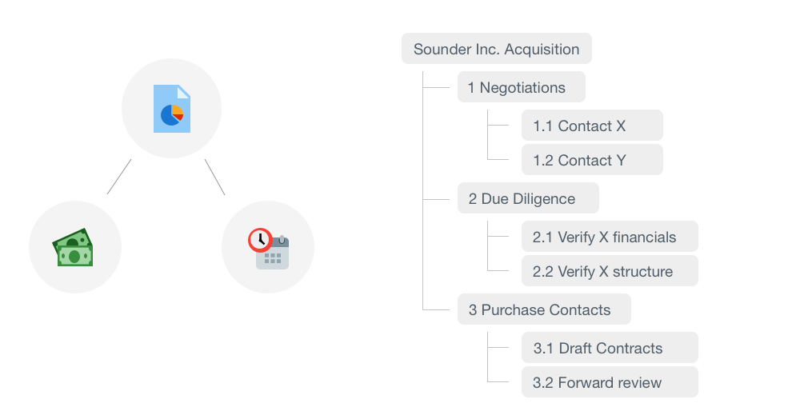

I was on the Cael product team to design Cael Project android app. I worked collaboratively with a PM, UX Designer, Senior App Developer, and App Development Intern. As the owner of this design project, me and another supporting designer tackled this for 2 months.
Design and ship Cael Project android app that would align with the existing iOS version of the app that supports Cael Project and make new UX improvements/features.
Cael Project streamlines legal project management by managing projects against budgets and schedules. It organizes project data at different levels and reflects the status, allowing customers to see how projects are doing. Users are able to monitor tasks, assign work, and communicate with colleagues on the platform.
Projects are broken into Matters (high lvl), Phases (mid lvl), and Tasks (low lvl) and they all come with schedules and budgets assigned to different staff.

The app easily informs the users project status and details based on priority. The users can also sort and search for items for monitoring and reviewing. Through a thread like communication channel, staff can comment and prioritize work.
Research
Stakeholder Interviews
I interviewed 4 stakeholders to understand their needs and engagement lvl, and through these questions I synthesized that:
- Purpose: To make it easier and clearer to check information on their phone, offer users what they need at a short glance
- Get right: Constantly making UX design improvements, continue collecting understand of target market, build new features
- Target audience: law related folks including lawyers, clients, managers, paralegals, assistants, runners, etc
- One thing: What are the most important tasks performed, what do you want to see (and for information that they see do they use it for communication)?
- Success: Less support/complaint tickets, reported customer satisfication, and increase in enrollment after demo period
To understand the user experience, I conducted 10 semi-structured interviews. My goal was to ask for specific examples throughout, rather than generalities. I wanted to see how different user types would interact with each other and have different pain points.
"When I log in to the app I'm usually away from the office and I need a quick snapshot of my firm. I am confirming a specific case to be marked finished, or certain phases to begin. I don't know each individual phase/task for each case so I need that to be clearly labeled."
- Managing Partner
"I review and manage the phases/tasks under each phase. I compile the progress for reporting or communicate what needs to be done. The lack of exporting or link to external communication can slow down my workflow since I need individually message people instead of commenting on a thread."
- Attorney
"I prepare contracts and file documents to help prepare for trial. I monitor the thread for each task closely for updates for next steps. I search for tasks to follow up on so it's important to me that commenting and communication constantly improve to help me focus more on the legal work itself."
- Paralegal
After interviewing, I complied pain points, possible solutions and a main question that we should strategize towards.
How can we improve interaction between different levels and improve user workflow?
Ideate
Potential ChangesPrototype
DigitalI then created a digital prototype of key user interactions and overall functions in order to prepare for user A/B testing. I wanted to focus on solving visitor pain points as well as making low risk modifications
Test
A/B TestingTo test the potential changes, I conducted 10 sessions of 2 use cases to see if there are qualitative and/or quantitative improvements. With the testing data, the team decided to implement changes 1,2,3.
- Changes 1 & 2 received verbal support and praise for solving key user pain point in speeding up the ability to search and the level of clarity
- Changes 3 received verbal support and praise for solving key user pain point and decreased use case completion speed by up to 20 seconds
- Change 4 recevied mixed opinions and did not have any quantitative significance
Design
Style GuideThe next part was coming up with a style guide in order to get the Android look down as well as have consistent elements in the app.
Due to NDA, I cannot share the final screens of the app. However, feel free to contact me if you would like to see some demo screens that I do have permission to show :)